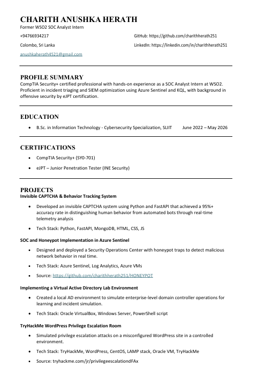
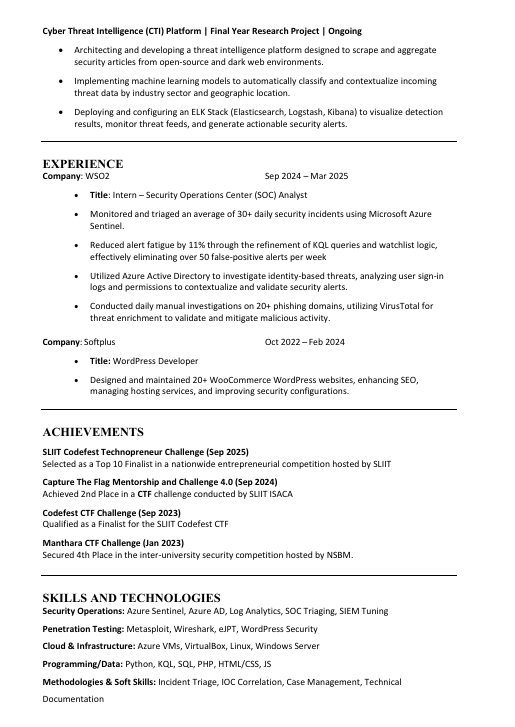
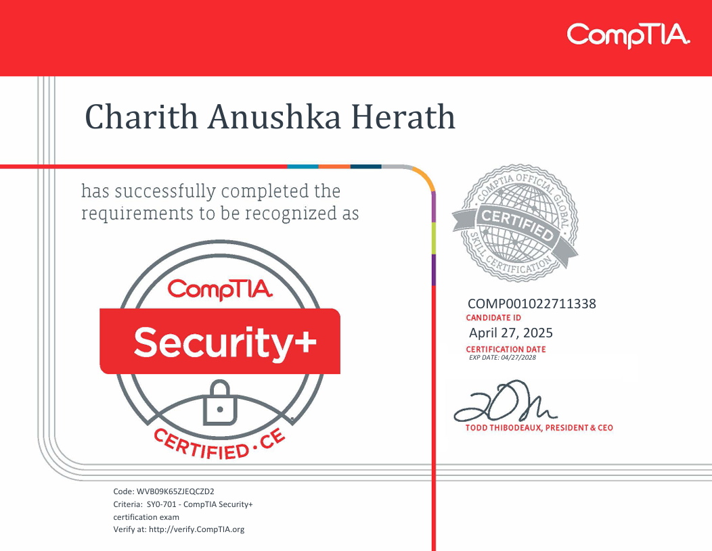
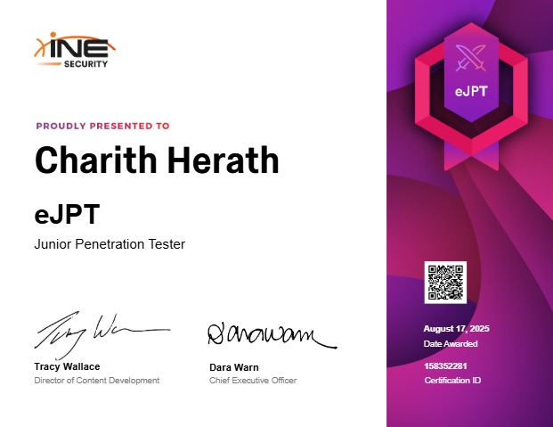

A final-year B.Sc. Information Technology student specializing in
Cybersecurity at SLIIT, Colombo, Sri Lanka. Former
SOC Analyst Intern @ WSO2
Passionate about blue team operations, threat intelligence, and building secure systems.
This single-page portfolio presents my PPW learning reflections, career development plan, professional
experience, projects, achievements, and supporting evidence.
Bridging cybersecurity expertise with professional communication
I am a dedicated and career-focused individual with a strong foundation in security operations and a passion for solving complex technical problems. I value continuous improvement and have developed a disciplined approach to work through hands-on experience in high-pressure environments, such as triaging live security incidents. My background as a SOC Analyst Intern has sharpened my ability to communicate findings clearly and work collaboratively within a security team.
My studies cover a comprehensive range of topics including network security, offensive security, and cloud infrastructure. I have earned professional certifications such as CompTIA Security+ and eJPT to supplement my academic learning with industry-recognized skills.
aim to grow into a cybersecurity professional who can effectively investigate threats, automate detection processes through machine learning, and contribute to both the technical defense and strategic security posture of an organization.
Monitored, triaged, and escalated security incidents using Azure Sentinel & KQL queries.
2nd place at SLIIT ISACA's CTF 4.0. Active participant in cybersecurity challenges.
Building a CTI platform for automated threat data collection and analysis.
Technopreneur Challenge finalist with a polished, professional pitch.
Key learnings and real-world applications from my professional skills development
Effective writing isn't about big words; it's about clarity and brevity. I learned to use the active voice, cut out filler phrases, and always include a clear call to action so the reader knows exactly what to do.
At WSO2, I transformed my long, "buried" incident summaries into sharp, bulleted reports. This allowed senior analysts to grasp key findings and act on security threats much faster.
A professional email requires a clear subject line, formal salutations, and a structured body. I learned the "netiquette" of avoiding slang and contractions while using specific phrases for requests and follow-ups.
I used these structures to request logs and escalate phishing investigations at WSO2. By making my requests professional and clear, I noticed a significant increase in how quickly other teams responded to me.
Memos are formal internal documents (To, From, Date, Subject) used to communicate policies or decisions. They must be direct, informative, and strictly professional rather than conversational.
While I didn't write memos daily, understanding this format helped me quickly interpret high-level security policy updates and escalation procedures within a corporate environment.
Great presentations rely on the "6x7 rule" (limited text), visual contrast, and delivery techniques like vocal variety and body language. Confidence comes from preparation, not just personality.
I applied these rules to my university projects and the SLIIT Codefest Technopreneur Challenge. Reducing slide clutter and rehearsing transitions helped me become a Top 10 Finalist.
Formal letters (for complaints, applications, or inquiries) carry more weight and formality than emails. Correct layout and a serious tone are essential for signaling professionalism.
I applied this disciplined approach to formal security reports and compliance documentation. It sharpened my ability to switch to a high-level professional tone when the situation demanded it.
I mastered the STAR method (Situation, Task, Action, Result) to provide structured, measurable answers. I also learned the importance of company research and avoiding common pitfalls like rambling.
I used the STAR method during my WSO2 internship interview to explain how I optimized KQL queries. This structured approach quantified my success and helped me secure the placement.
A professional call needs an introduction, a clear purpose, and a summary of next steps. Active listening and maintaining a professional tone—even with difficult callers—is vital.
I used these steps at WSO2 when verbally coordinating urgent phishing domain validations. Being clear and confirming actions before hanging up ensured no mistakes were made during time-sensitive tasks.
Over 60% of communication is non-verbal. I learned how posture, eye contact, and "paralanguage" (tone/pitch) can either project confidence or reveal nervousness.
Through mock interviews, I identified habits like fidgeting and speaking too fast. Correcting these helped me stay composed and professional during high-pressure competitions like the SLIIT CTF.
Professionalism is a continuous process of self-reflection. I learned to identify my own strengths and gaps, turning vague career goals into a structured development plan.
I realized that technical skills (certifications) must be paired with intentional communication. I now approach my journey from a junior SOC Analyst to a future team lead with much higher self-awareness.
A structured roadmap from SOC Analyst to Threat Intelligence Lead
Current Position: Final-year IT undergraduate, Cybersecurity Specialization, SLIIT (graduating May 2026)
Career Goal: Senior SOC Analyst → Threat Intelligence Lead
| Area | Current Strength | Gap to Address |
|---|---|---|
| SIEM & Detection | Azure Sentinel, KQL, Log Analytics | Need exposure to Splunk, IBM QRadar |
| Threat Intelligence | CTI platform (final year project) | Need formal TI frameworks (MITRE ATT&CK deeper usage) |
| Offensive Security | eJPT certified, CTF experience | Need OSCP-level penetration testing depth |
| Cloud Security | Azure fundamentals | Need AWS/GCP security exposure |
| Malware Analysis | Basic understanding | Need hands-on dynamic/static analysis skills |
| Communication | PPW trained, report writing | Continuous improvement needed |
| Leadership | Team projects, CTF teams | Need formal leadership experience in workplace |
| Timeframe | Goal | Actions |
|---|---|---|
| 0–6 months | Land a full-time SOC Analyst role | Apply to Sri Lankan and remote SOC positions; leverage WSO2 internship experience |
| 6–12 months | Strengthen detection & hunting skills | Complete CySA+ certification; build personal threat hunting lab |
| 1–3 years | Specialise in Threat Intelligence | Pursue CEH or OSCP; contribute to open-source CTI projects |
| 3–5 years | Move into a senior/lead SOC role | Take on team leadership; publish threat research |
A comprehensive overview of my qualifications, experience, and achievements
My CV contains detailed information about my education at SLIIT, professional experience at WSO2, certifications (CompTIA Security+ & eJPT), technical skills, and project portfolio including my Cyber Threat Intelligence research platform.


The security stack I work with daily
SIEM & SOAR
Query Language
Packet Analysis
Exploitation
Web Security
Automation
Operating System
SIEM Platform
Backend
Frontend
CMS
Systems Programming
Technical proficiencies and professional competencies I bring to the table
Industry-recognised credentials validating my cybersecurity expertise
SY0-701 — CompTIA

Junior Penetration Tester — eLearnSecurity

Have a question or want to work together? Let's connect.
I'm always open to discussing new opportunities, cybersecurity challenges, or collaborative projects. Feel free to reach out!